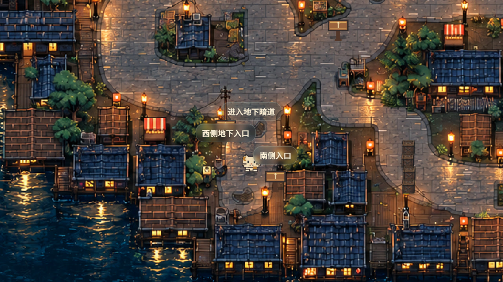
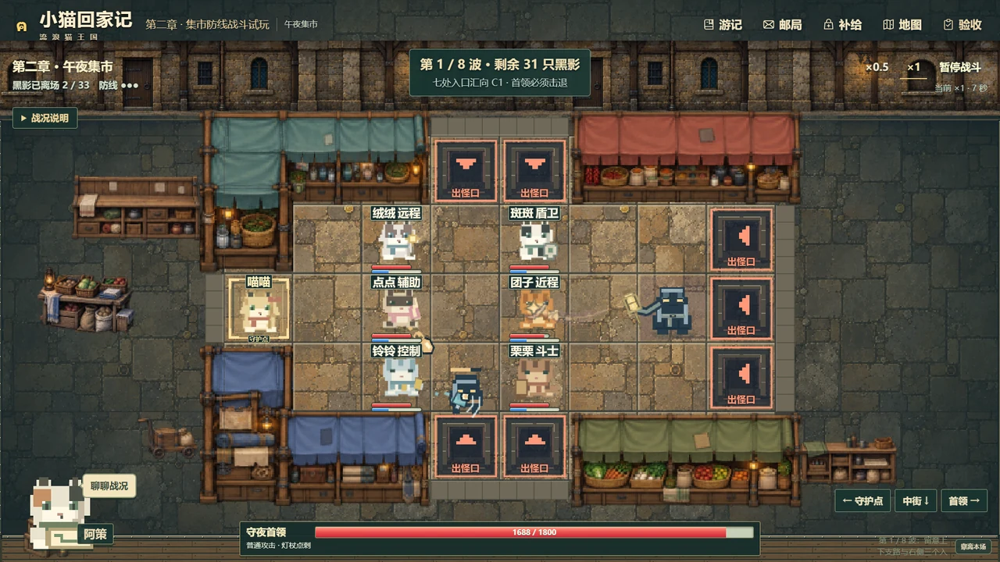
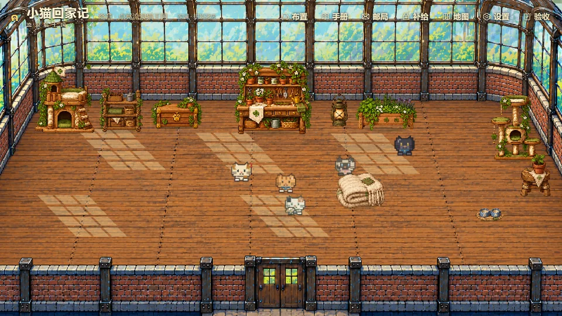
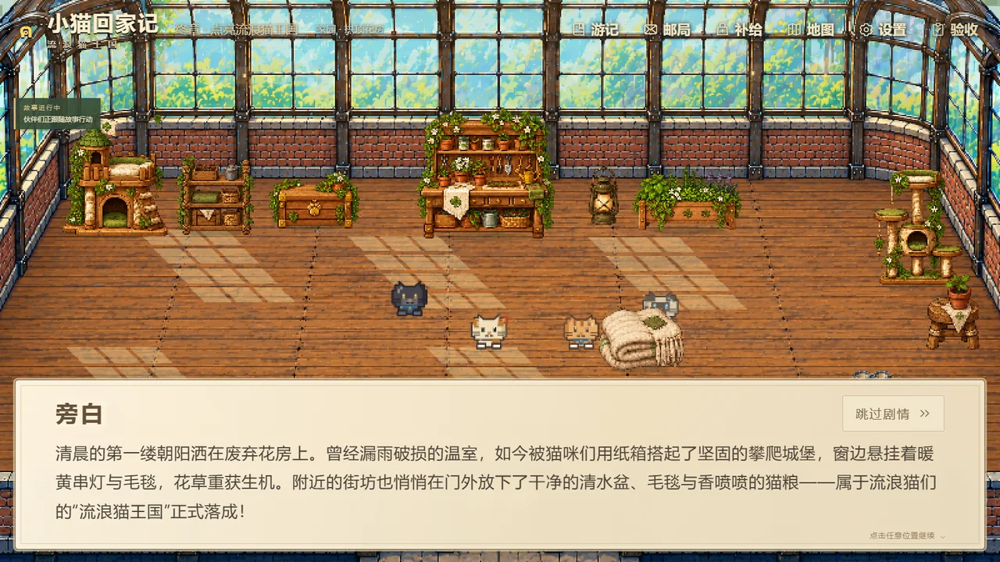

EXPLORATION & EVENTS
Choices with consequences
Encounters can change battles, cats and home life.

Encounters can change battles, cats and home life.

Events during battles; more distinct cat abilities.

Distinct interactions, animations and relationships.

Side stories and character moments within combat.
Click a system to preview a proposed future influence. Click it again to replay.